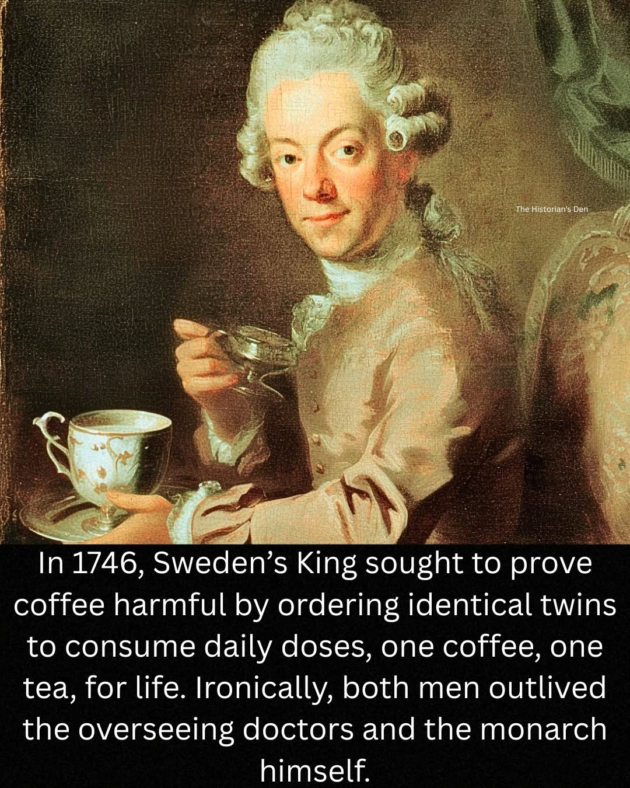

One of the first twin studies in the history of medicine! (It’s funny, but also true.)
Twin studies are now an important part of medical research.
A historical anecdote about an early twin study; Louis says twin studies are now important.
One of the first twin studies in the history of medicine! (It’s funny, but also true.)
Twin studies are now an important part of medical research.
Coffee first arrived in Sweden around 1674, but by the mid‑18th century it had become fashionable among the wealthy while authorities viewed it with suspicion. In 1746, a royal edict banned both coffee and tea, citing misuse and excesses, and over the following decades coffee was outlawed multiple times between 1756–61, 1766–69, 1794–96, 1799–1802, and 1817–23, as rulers feared its social and medical effects.
Against this backdrop, King Gustav III of Sweden, who reigned from 1771 until his assassination in 1792, became convinced that coffee was harmful and sought to prove it through a peculiar experiment.
He ordered that identical twins sentenced to death have their punishment commuted on the condition that they participate in a lifelong study. One twin was required to drink three pots of coffee daily, while the other consumed the same amount of tea. The experiment was overseen by court physicians in Stockholm and intended to demonstrate the dangers of coffee.
Ironically, both twins outlived the doctors supervising them, as well as Gustav himself, who was assassinated in 1792, leaving the experiment without its royal sponsor.
Though primitive and anecdotal, the study became symbolic of Sweden’s uneasy relationship with coffee. Instead of proving harm, it highlighted the resilience of coffee drinkers and undermined the king’s intended conclusion. Over time, Sweden transformed from banning coffee to embracing it as part of national culture.
Today, the Swedish tradition of fika, a social coffee break, stands in sharp contrast to Gustav III’s failed attempt to suppress the drink, turning what was once feared into a cherished national ritual.

A shared summary of the AHA scientific statement says coffee links to lower risk of type 2 diabetes, coronary disease, heart failure, stroke and AFib, with greatest benefit at 2-4 cups and up to 5. Tea was also associated with better outcomes; energy drinks and caffeine supplements differ.

Louis shares a chart based on the Harvard Nurses' Health Study and Health Professionals Follow-up Study relating coffee, tea and caffeine to dementia, with links to previous posts. The chart image is not described in the text.
Shared JAMA summary of the Harvard Nurses' Health Study and Health Professionals Follow-up Study. Moderate intake of caffeinated coffee or tea was associated with lower dementia risk and modestly better cognition, while decaf showed no benefit.
Shared summary of the JAMA cohort study following health professionals for an average of 37 years. Moderate caffeinated coffee or tea intake was linked to lower dementia risk and better cognitive performance, with no relationship for decaf.

Louis shares the JAMA prospective cohort study of over 130,000 US adults followed up to 43 years: higher caffeinated coffee and tea intake was associated with lower dementia risk and modestly better cognition, strongest at moderate intake.
Louis quotes a BMC Medicine study of more than 3,100 TwinsUK adults followed over a decade. Diets rich in tea, coffee, berries, nuts and whole grains were associated with healthier blood pressure and cholesterol and lower CVD risk scores, and urinary polyphenol metabolites showed the same pattern.